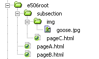

Understanding paths
This lecture note demonstrates how to reference external media files in HTML documents. Since HTML files contain text only (ASCII) it does not contain other files such as images or videos for example. However, HTML allows to describe the location where additional material is located. The issue is to understand how to reference correctly those external resources.
Relative vs. absolute paths
A fundamental difference exists between absolute vs. relative paths. The most common error why web pages won't behave as intended is a confusion of absolute with relative paths.
An absolute path describes the location of a certain file taking into account the specific computer / domain this file is stored. The absolute path of this document is:
(1) http://www.toytic.com/class/examples/e506_html_anchors.html
Anybody on the Internet can identify and link to it by citing the above address. This path is independent from where it is located itself.
Relative paths in contrast identify a given file in relation to another file/location. Here location matters. Consider the following:
(2) e506_html_anchors.html
With just the name of the file we don't know where this file is located precisely. Its absolute path could be as in example (1) but it also could be something different such as http://www.nevermind.com/e506_html_anchors.html
As a consequence, these relative paths always take the current document as their point of reference. The location of the document that contains these relative paths matters in order to function properly. For example, if a browser encounters a hyperlink as in example (2) it would look for the corresponding file in the same folder.
Note: websites should always use relative paths. You can move your site between different servers/computers and they will always work. How files are located in relation to another does not change and remains unaffected if the whole file structure is transferred 1:1 to another server.
An example file structure
Below you see an example file structure captured from Dreamweaver. It does not matter if it is Dreamweaver or the Windows Explorer or Finder (on Mac). The file structure on computers are always those tree systems of folders and files.

A first folder "e506root" which contains two HTML files: pageA and pageB. Furthermore it contains a sub folder called "subSection" which in turn contains a pageC and a folder with an image. In the examples below I will show you the code for linking the various documents and files.
(1) pageA -> pageB (same folder)
The code below is contained in pageA.html and will produce a hyperlink (when viewed in a browser) to jump to pageB. We stay in the same directory.
<html>
<head>
<title>pageA</title>
</head>
<body>
<a href="pageB.html"> Link to pageB </a>
</body>
</html>
(2) pageA -> pageC (descend into child folder)
In order to access pageC from within pageA we just have to further specify the path to the child folder. We enter into a child folder.
<html>
<head>
<title>pageA</title>
</head>
<body>
<a href="subsection/pageC.html"> Link to pageC </a>
</body>
</html>
(3) pageC -> pageA (ascend to parent folder)
Note that this code is contained in the file pageC.html In order to get back from pageC to pageA we have to access the parent folder with the following syntax ../
If you want to ascend two levels in the folder hierarchy you have to concatenate this syntax: ../../ etc.
<html>
<head>
<title>pageC</title>
</head>
<body>
<a href="../pageA.html"> Link to pageA </a>
</body>
</html>
(4) pageA -> goose.gif
In order to reference an image file which is contained even deeper in the file structure we just specify further the folders. Note that I don't use hyperlinks now but the <img> tag to reference an image. A browser will replace the code with the actual image file specified by the src attribute. The source attribute is also used in conjunction with other tags (for example to reference multimedia or external Style-Sheets.)
<html>
<head>
<title>pageA</title>
</head>
<body>
<img src="subSection/img/c01.gif"/>
</body>
</html>